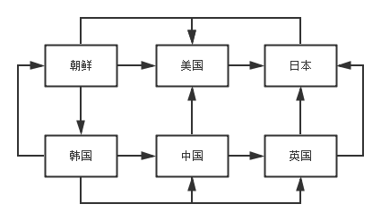
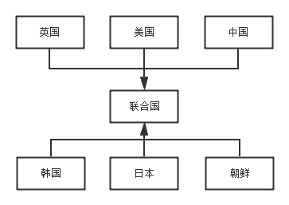
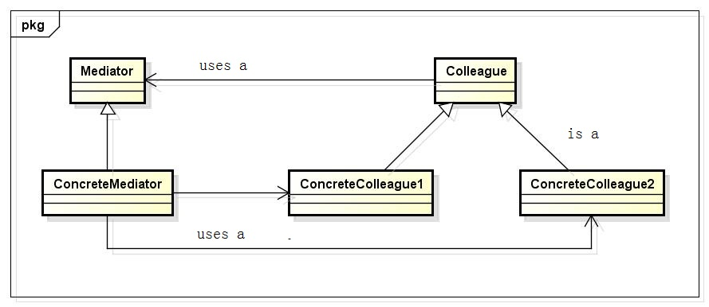

中介者模式
1 前言
我们都知道，这个国际政治是一门很深的学问，不玩政治的人是搞不懂的。那么多的国家，国家之间的关系又及其复杂；就好比现在，美国和中国有经济利益关系，美国又和日本有盟友关系，朝鲜又和中国有说不清道不明的关系；这些复杂的关系，稍微处理不好，就可能引发局部战争，更有可能引发第三次世界大战。如果出现了国与国之间出现了利益纠纷，那么该怎么办呢？这个时候，联合国出现了。联合国就是一个处理国与国之间纠纷的中介者。
2 中介者模式
在GOF的《设计模式:可复用面向对象软件的基础》一书中对中介者模式是这样说的：用一个中介对象来封装一系列的对象交互。中介者使各对象不需要显式地相互引用，从而使其耦合松散，而且可以独立地改变它们之间的交互。
我们都知道，面向对象设计鼓励将行为分布到各个对象中。但是，这种分布可能会导致对象间有许多连接。在最坏的情况下，每一个对象都知道其他所有对象，就造成了复杂的关联关系。虽然将一个系统分割成许多对象通常可以增强可复用性，但是对象间相互连接的激增又会降低其可复用性。大量的相互连接使得一个对象似乎不太可能在没有其他对象的支持下工作，这样使得系统表现为一个不可分割的整体。而且，对系统的行为进行任何较大的改动都十分困难，因为行为被分布在许多对象中。结果是，你可能不得不定义很多子类以定制系统的行为。
问题再回到联合国的问题上来，在联合国还没有成立时，国与国之间的关系是这样的：
当联合国成立以后，国与国之间出现纠纷时，是这样的：
联合国的成立，让很多关系简单化了，让问题的处理也简单化了，使国与国之间因为纠纷产生摩擦的几率减小了，让世界更和平了。
3 UML类图
Mediator：中介者，它定义了一个接口用于与各个Colleague对象通信；
ConcreteMediator：具体的中介者，它通过协调各Colleague对象实现协作行为；并了解和维护它的各个Colleague；
Colleague：同事类，每一个同事类都知道它的中介者对象；每一个同时对象在需要与其他的同事通信的时候，而是与它的中介者通信。
它们之间是按照以下方式进行协作的：
同事向一个中介者对象发送和接收请求。中介者在各同事间适当地转发请求以实现协作行为。
4 使用场合
在下列情况下使用中介者模式：
一组对象以定义良好但是复杂的方式进行通信。产生的相互依赖关系结构混乱且难以理解；
一个对象引用其他很多对象并且直接与这些对象通信，导致难以复用该对象；
想定制一个分布在多个类中的行为，而又不想生成太多的子类。
5 优缺点
减少了子类生成，Mediator将原本分布于多个对象间的行为集中在一起。改变这些行为只需生成Meditator的子类即可。这样各个Colleague类可被重用；
它将各Colleague解耦，Mediator有利于各Colleague间的松耦合。你可以独立的改变和复用各Colleague类和Mediator类；
它简化了对象协议，用Mediator和Colleague间的一对多的交互来代替多对多的交互。一对多的关系更容易理解、维护和扩展；
它对对象如何协作进行了抽象，将中介作为一个独立的概念并将其封装在一个对象中，使你将注意力从对象各自本身的行为转移到它们之间的交互上来。这有助于弄清楚一个系统中的对象是如何交互的；
它使控制集中化，中介者模式将交互的复杂性变为中介者的复杂性。因为中介者封装了协议，它可能变得比任一个Colleague都复杂。这可能使得中介者自身成为一个难于维护的庞然大物。
6 代码实现

1 #include <iostream> 2 using namespace std; 3 4 #define SAFE_DELETE(p) if (p) { delete p; p = NULL; } 5 6 class Mediator; 7 8 class Colleague 9 { 10 public: 11 Colleague(Mediator *pMediator) : m_pMediator(pMediator){} 12 13 virtual void Send(wchar_t *message) = 0; 14 15 protected: 16 Mediator *m_pMediator; 17 }; 18 19 class ConcreteColleague1 : public Colleague 20 { 21 public: 22 ConcreteColleague1(Mediator *pMediator) : Colleague(pMediator){} 23 24 void Send(wchar_t *message); 25 26 void Notify(wchar_t *message) 27 { 28 wcout<<message<<endl; 29 } 30 }; 31 32 class ConcreteColleague2 : public Colleague 33 { 34 public: 35 ConcreteColleague2(Mediator *pMediator) : Colleague(pMediator){} 36 37 void Send(wchar_t *message); 38 39 void Notify(wchar_t *message) 40 { 41 cout<<"ConcreteColleague2 is handling the message."<<endl; 42 wcout<<message<<endl; 43 } 44 }; 45 46 class Mediator 47 { 48 public: 49 virtual void Sent(wchar_t *message, Colleague *pColleague) = 0; 50 }; 51 52 class ConcreteMediator : public Mediator 53 { 54 public: 55 // The mediator forward the message 56 void Sent(wchar_t *message, Colleague *pColleague) 57 { 58 ConcreteColleague1 *pConcreteColleague1 = dynamic_cast<ConcreteColleague1 *>(pColleague); 59 if (pConcreteColleague1) 60 { 61 cout<<"The message is from ConcreteColleague1. " <<"Now mediator forward it to ConcreteColleague2"<<endl; 62 if (m_pColleague2) 63 { 64 m_pColleague2->Notify(message); 65 } 66 } 67 else 68 { 69 if (m_pColleague1) 70 { 71 m_pColleague1->Notify(message); 72 } 73 } 74 } 75 76 void SetColleague1(Colleague *pColleague) 77 { 78 m_pColleague1 = dynamic_cast<ConcreteColleague1 *>(pColleague); 79 } 80 81 void SetColleague2(Colleague *pColleague) 82 { 83 m_pColleague2 = dynamic_cast<ConcreteColleague2 *>(pColleague); 84 } 85 86 private: 87 // The Mediator knows all the Colleague 88 ConcreteColleague1 *m_pColleague1; 89 ConcreteColleague2 *m_pColleague2; 90 }; 91 92 void ConcreteColleague1::Send(wchar_t *message) 93 { 94 // The second parameter mark where the message comes from 95 m_pMediator->Sent(message, this); 96 } 97 98 void ConcreteColleague2::Send(wchar_t *message) 99 { 100 m_pMediator->Sent(message, this); 101 } 102 103 int main() 104 { 105 // Create the mediator 106 Mediator *pMediator = new ConcreteMediator(); 107 108 Colleague *pColleague1 = new ConcreteColleague1(pMediator); 109 Colleague *pColleague2 = new ConcreteColleague2(pMediator); 110 111 ConcreteMediator *pConcreteMediator = dynamic_cast<ConcreteMediator *>(pMediator); 112 pConcreteMediator->SetColleague1(pColleague1); 113 pConcreteMediator->SetColleague2(pColleague2); 114 115 wchar_t message[260] = L"Where are you from?"; 116 pColleague1->Send(message); 117 118 return 0; 119 }
output:
The message is from ConcreteColleague1. Now mediator forward it to ConcreteColleague2 ConcreteColleague2 is handling the message. Where are you from?
实现一个通用的中介者模式：
7 与外观模式的区别
我在看中介者模式时，第一眼就感觉中介者模式和外观模式超级像。外观模式与中介者模式的不同之处在于它是对一个对象子系统进行抽象，从而提供了一个更为方便的接口；外观模式的协议是单向的，即外观模式向子系统提出请求，但反过来则不行；而对于中介者模式，是进行多个对象之间的协作，通信是多向的。
8 总结
中介者模式是一个比较简单的设计模式，我在这里对中介者模式进行总结，希望对大家有用。
本页共32段，1994个字符，4980 Byte(字节)